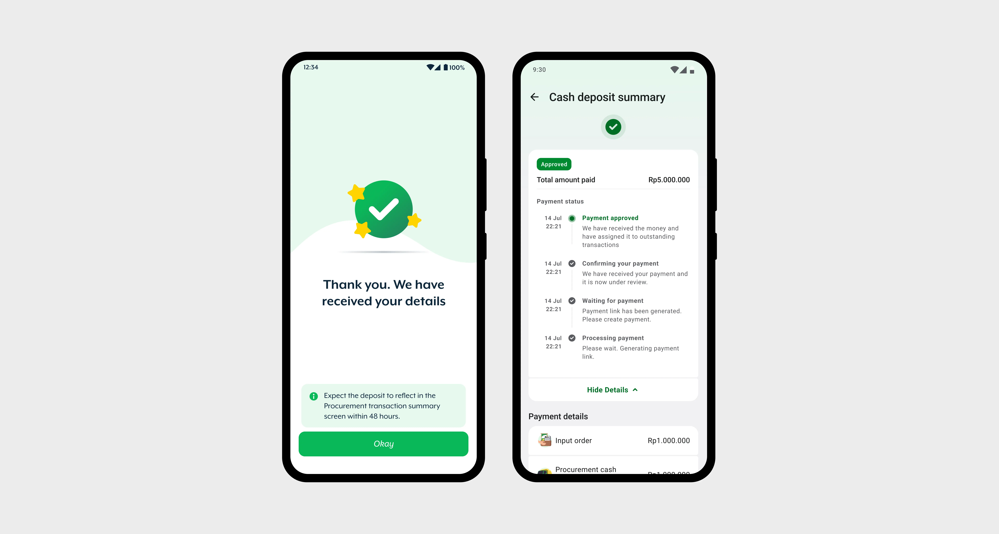

CDC w Xendit
2023.Jiva
Cutting a 72-hour wait on loan repayments, without changing a flow 20,000 field agents already knew.

Context, why repaying a loan took three days
Jiva lent money to smallholder farmers in Indonesia. Field agents were the link. They borrowed on behalf of the farmers in their network, each loan tied to a named farmer, and used it to buy seed and fertiliser and move the harvest. Most worked out of remote villages, with low to medium digital literacy.
Paying a loan back worked like this. The agent transferred money to Jiva’s bank account, opened the app, typed in the amount, photographed the deposit slip, and chose which loans the money should clear. Then they waited. Someone in Jiva’s finance team opened each claim, checked the slip against the transfer, and updated the balance by hand. That took 48 to 72 hours.
Most of the year that was slow but survivable. During harvest it wasn’t. An agent with an unconfirmed repayment couldn’t draw the next loan, and a farmer who couldn’t buy seed that week lost the planting window.


Research, 5,000 tickets and 90% human error
I started with the support executive who handled payment tickets. Their read was that almost all of it was people, not the system. Marking more than they owed, marking less, an extra zero that changed the number entirely.
I wanted the number rather than the impression, so I wrote the requirement and asked the data team to pull it. Every payment ticket Jiva had logged, the whole life of the product, not just harvest season. Around 5,000 came back. 90% were human error.
None of them should have reached a human. An agent could allocate 2,000,000 against an outstanding of 200,000 and the app would accept it, send it to finance, and finance would phone the agent to ask what they meant. The checks were simple arithmetic. Nobody had built them yet.

Decision, allocate first, pay second
Xendit arrived as a decision already made. Business had chosen the aggregator; my question was what it did to the flow.
Agents used to pay first and allocate afterwards. By the time the app saw the numbers, the money was gone so a wrong amount became a phone call from the finance team, not a correction on screen.
I moved the allocation ahead of the payment. The agent tells the app what they owe and where it goes, the app checks it, and only then do they pay.
This meant we remove the photos of bank slip. With Xendit identifying the payer, there was nothing left to photograph. I read that as one less thing to do. Testing said otherwise.


User Testing, removing a step removed their proof
Five agents went through the prototype. Two of them stopped and asked about the bank slip.
The slip was the one physical thing they had showing the money had left their account, and without it they felt they were paying and hoping.
So I added a page before the deposit starts, shown the first five times an agent uses the new flow across the first three months, explaining what changed and why there’s no slip to upload.
There was a timeline argument against this and it was fair, so I designed it in a day. After launch, agents were spending longer on this page than on any other screen in the flow.

Results, what changed
Six months after launch, the team reported a 90% drop in payment support calls against the pre-Xendit baseline. Across 200,000 farmers and 20,000 field agents, around 20 tickets came in about the new flow, and those were people asking what had changed rather than reporting a mistake.
The errors the system now caught stopped reaching the finance team at all.

Learnings
I treated the bank slip as a step to remove. It was a receipt, and I only found that out in testing. Now when I take something away from a flow, I check what the user was using it for, not just what it cost them to do.